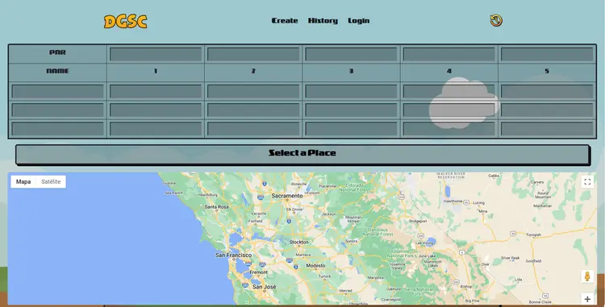

ls ./screenshots

tarjeta de puntaje en partida

selección del campo en mapa
Disc Golf Score Card. Registra tus rondas, consulta el historial y marca el campo en el mapa, pensada para usarse al aire libre con el sol de frente.
DGSC nació de una necesidad real: llevar el marcador en una ronda de disc golf siempre terminaba en notas de papel arrugadas o cálculos mentales con poco margen de error.
La app permite crear una tarjeta de puntaje para cualquier campo, registrar los tiros por hoyo de cada jugador, y guardar la partida con la ubicación exacta. Todo en una interfaz rápida y sin distracciones. El historial guarda cada ronda pasada para que veas tu progreso a lo largo del tiempo.
Scorecard digital multi-jugador, con pares por hoyo y cálculo automático del total.
Cada jugador con su propio historial, disponible desde cualquier dispositivo.
Selecciona el campo desde un mapa integrado; cada partida queda vinculada geográficamente.
Fechas, campos, compañeros y resultados, accesibles en cualquier momento.
Controles grandes y flujo claro para registrar un tiro en segundos, al aire libre.
Frontend y backend en un solo proyecto, API Routes con rendering optimizado.
